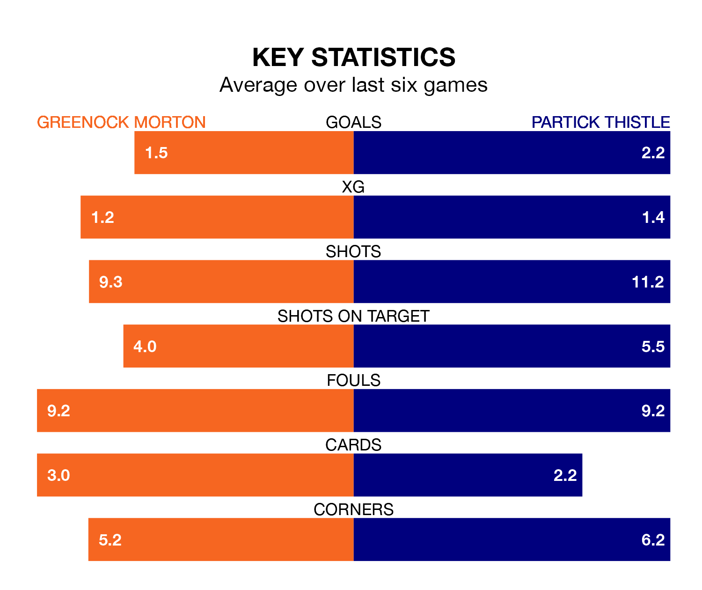

Greenock Morton face Partick Thistle on Saturday seeking to protect their long unbeaten run in Scottish Championship.
The Ton are unbeaten in seven, with five wins and two draws, ahead of the 3pm kick-off.
They face a Partick Thistle team who have won four and drawn one over the same number of games.
With 41 goals in 20 games so far this season, Partick Thistle are the league's second-highest scorers with 2.0 goals per game. But they are conceding more than average too, letting in 32 goals at a rate of 1.6 per game.
Greenock Morton, meanwhile, are below average scorers, with 1.2 goals per game, compared to a league average of 1.4. They have conceded 1.4 goals per game.
In Brian Graham, Thistle have the league's sharpest shooter so far this season. He has notched 10 goals in 19 appearances.
His goal rate of one every 153 minutes is quicker than that of Robbie Muirhead, the Ton's top scorer with a goal every 182 minutes, and a total of eight goals in 17 games.
In the last 10 years, Greenock Morton and Partick Thistle have played each other on 20 occasions. Greenock Morton won six of them, Partick Thistle 11, and they drew three times.
On average, the Ton scored 1.1 goals and Thistle 1.6 in those matches.
Their last meeting was on November 11, when Partick Thistle won 2-1 at home.
The visitors are third in the table after 20 games, of which they have won 10 and drawn five, earning 35 points.
The home side are two places behind Partick Thistle in fifth, with seven wins and four draws putting them on 25 points.
Greenock Morton's last match was on January 6, a 3-2 win against Dundee United, with George Oakley getting the goals for the Ton.
Partick Thistle beat Arbroath 4-0 last time out, also on January 6, with Tomi Adeloye (two), Aidan Fitzpatrick and Brian Graham on the scoresheet.
Updated: 15:34, 08/01/24